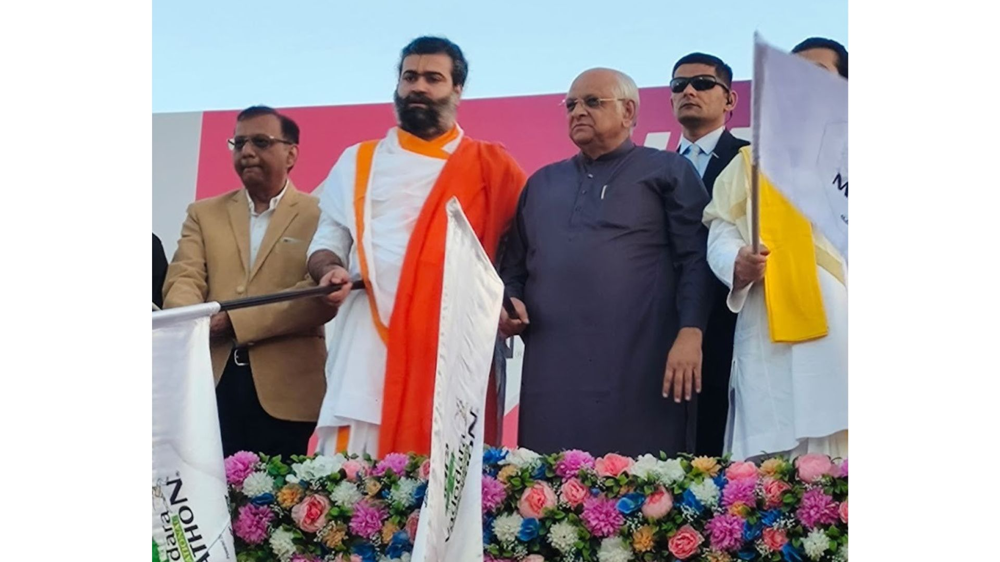

The Vadodara Marathon is known to be much more than just a race, it’s a reflection of the
city’s spirit. The marathon has brought people from far and near together for fitness,
community, and meaningful causes each year for the last 12 years. This edition, one such
cause stood out for us at Access Computech. The Jawan Run, dedicated to honoring India’s
armed and defense forces.
The 12th edition of the Vadodara Marathon saw thousands take to the streets, running not
just for themselves but also in tribute to the men and women who serve the nation in
addition to other philanthropic causes supported by the Marathon.

Gujarat’s Chief Minister, Hon’ble Shri Bhupendrabhai Patel, was also present at the event,
standing alongside dignitaries, defense personnel, and citizens in a show of respect.
Access Computech Pvt. Ltd. (ACPL), a proud Vadodara-based company, joined this initiative as
the official sponsor of the Jawan Run, reinforcing our commitment to the community. The
company’s directors were seen on stage alongside the Chief Minister, a moment that captured
ACPL’s support for the cause.
Vadodara Marathon has long supported social initiatives through the funds it raises, and the
Jawan Run is a tribute, both in spirit and in action, to those who protect the country. As a
company that designs and manufactures smart security and authentication solutions in
Vadodara, supporting the jawans of India felt like a natural extension of the work we do.
In the end, the marathon wasn’t just about kilometers covered—it was about like minded
people coming together, running with purpose, and remembering the people who make our safety
possible.
About Jawaan Run:
This special Marquee Run is specially for the armed and defence forces, which include all
cadres of EME, Air Force, Air Defence, CISF, Police & NCC stationed in and around Vadodara
and Gujarat. This Run is a tribute to all the armed and defence forces of India, whose
contributions and sacrifice for the safety and security of India.
Access Computech & Vadodara Marathon salutes and pays respect to all the valiant women and
men who have laid down their lives, been injured or who are presently serving in various
forces across the nation.
About Vadodara Marathon:
Vadodara Marathon (VM) was incepted in 2009, as a not-for-profit organisation under Section
25 of the Companies Act. VM enthuses and encourages citizens to adopt a fitness oriented and
healthy lifestyle. Each edition of the Marathon attracts elite professional runners from all
over the world and India, along with citizens from Gujarat.With each edition, Vadodara
Marathon has grown from strength to strength. It is the largest international sporting event
in Gujarat, and among the top 10 Marathons in India.
About Access Computech Pvt. Ltd:
At Access Computech Pvt. Ltd. our motto and vision has always been “Trust and Innovation”.
Since our inception in September 1994, we have provided Innovative, customised personalised
identification systems. We are the leading manufacturers of Aadhaar based authentication
devices for use in the Aadhaar ecosystem. At the same time, we develop, design, manufacture
and provide integration and installation of our various products ranging from Attendance,
Access Control, Contract labour management, Gate entry systems. We also manufacture and
provide Point of Sales devices and terminals for use in the Financial and Banking sectors.